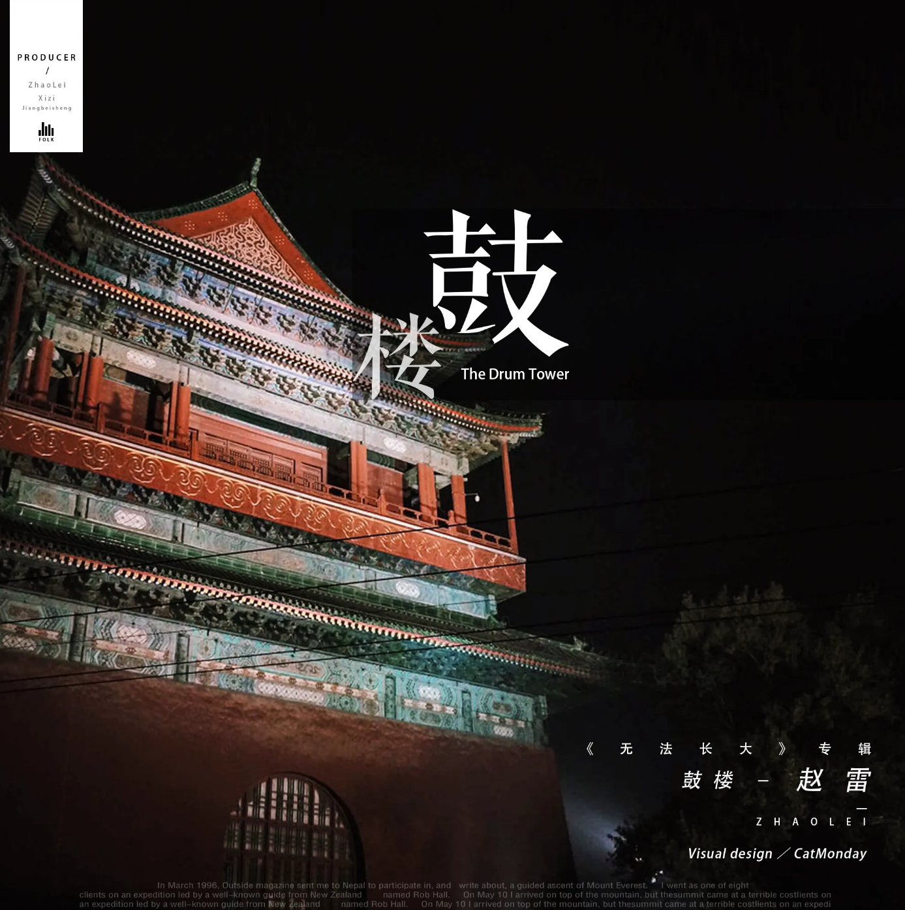
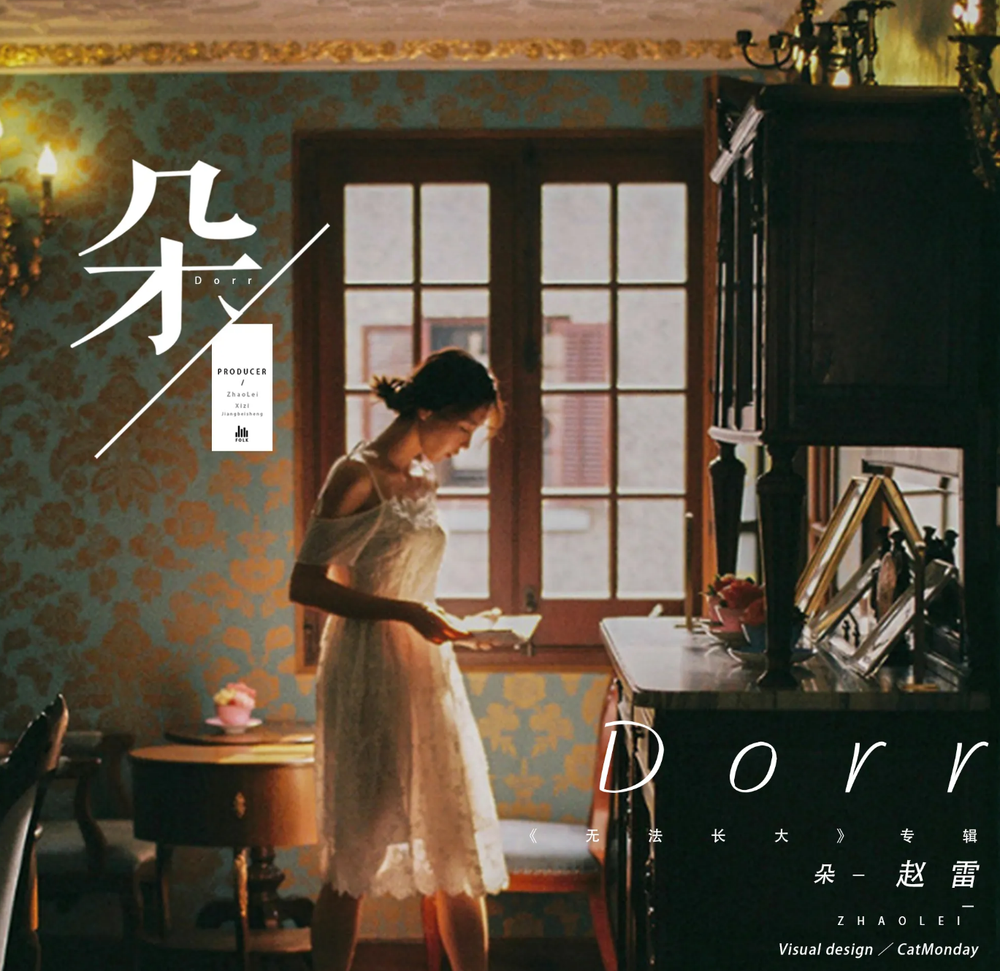
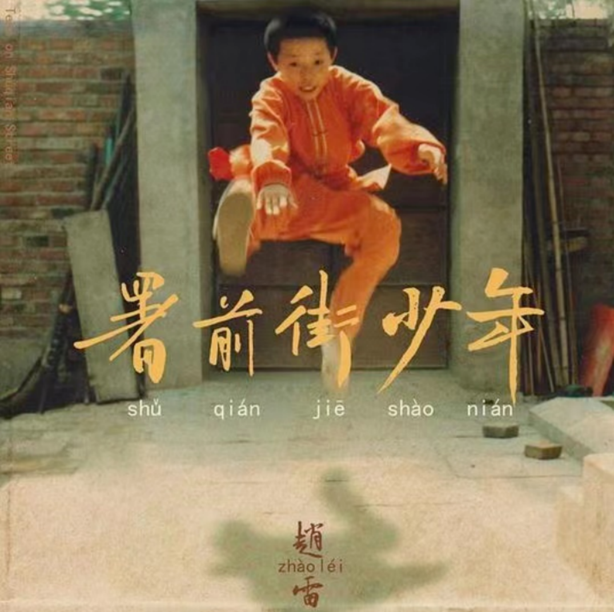
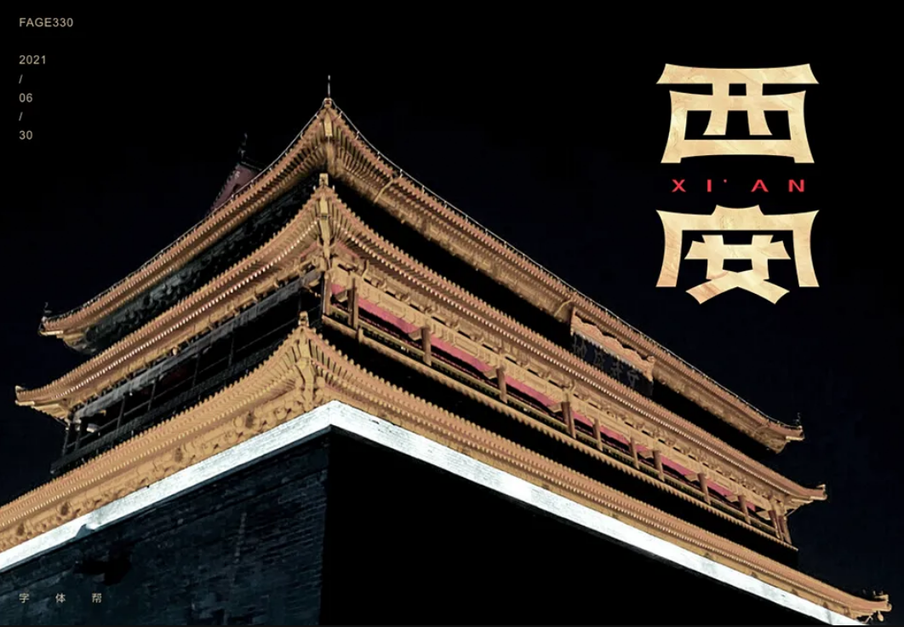
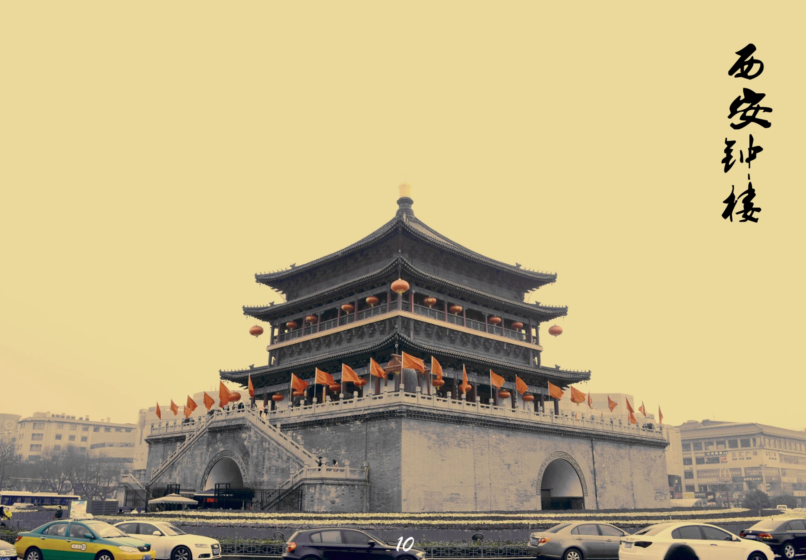
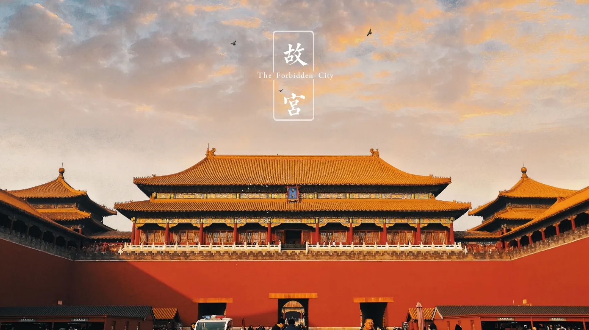
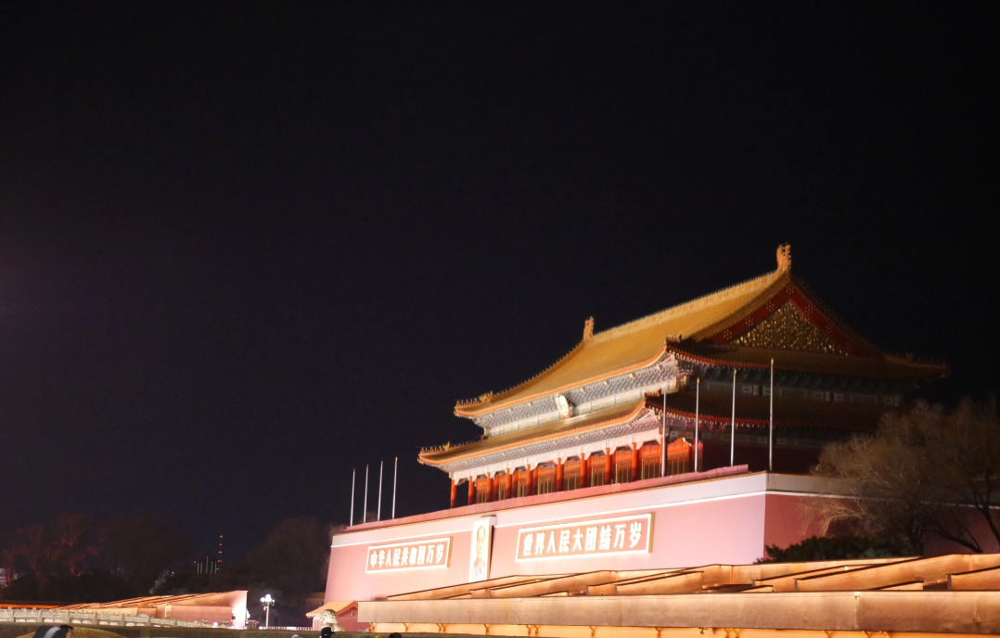
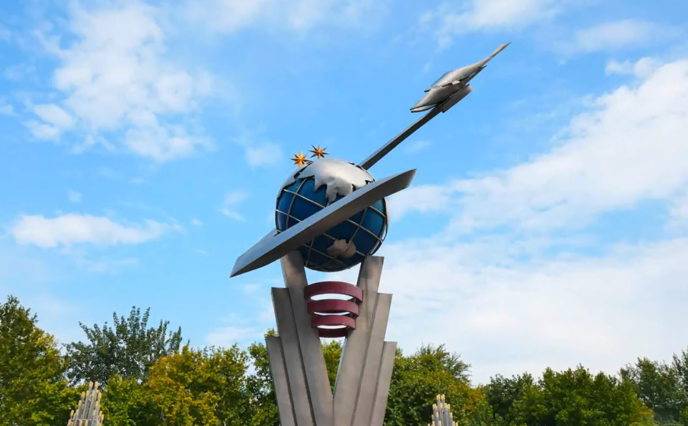

我喜欢的音乐
我喜欢听音乐，尤其是赵雷的歌曲。
赵雷的音乐，如同春日里的一缕暖阳，温暖而明媚，照亮了心灵的每一个角落。他的歌声，带着时光的印记，穿过岁月的长河，轻轻拂过耳畔，
唤醒了沉睡已久的情感。
那首《成都》，仿佛将我们带到了玉林路的尽头，看着小酒馆的门口，感受着分别的忧愁与重逢的喜悦。而《南方姑娘》，则让我们想起了那温
婉如水的女子，眼中闪烁着对美好生活的向往。
赵雷的音乐，是旅途中最好的陪伴，让我们在陌生的城市里，不再孤单。每一次聆听，都是一次心灵的洗礼，让我们在纷繁世界中，找到一片宁
静的港湾。



单击图片欣赏音乐(再次点击暂停播放).....
旅游
旅游，作为一种独特的生活体验，它不仅是一次简单的出行，更是一场心灵的远行。当我们踏上旅途，就意味着我们开始了一段寻找自我、放松身心、增长见识的旅程。
在这段旅程中，我们可以穿梭于名山大川之间，感受大自然的神奇魅力，那山峦叠翠、碧水蓝天的美景，无不让人心旷神怡，流连忘返。我们也可以漫步在古老的小巷，
品味历史的沉淀，那斑驳的城墙、沧桑的遗迹，仿佛在诉说着千年的故事，让人感慨万千。
在旅途中，我们不仅会遇到美丽的风景，还会遇到形形色色的人。与他们交流，了解他们的生活习俗和风土人情，让我们懂得尊重与包容，学会从不同的角度看待世界。
此外，旅行中的种种挑战和未知，也锻炼了我们的独立能力和应变能力，让我们在不断的尝试和探索中成长。
旅行让我们暂时脱离了熟悉的环境，让我们有机会重新审视自己，思考生活的真谛。在这个过程中，我们学会了珍惜当下，懂得了生活的美好。每一次旅行归来，我们都
会带着满满的收获，以更加积极的心态面对生活，让人生因此变得更加丰富多彩。总之，旅游是一场永无止境的探索，它让我们在不断的行走中发现美好，感悟人生。
这里是我旅游的照片...




我的学校
这里是我的学校简介...
西安航空学院,简称西航，位于陕西省西安市，由陕西省人民政府举办的全日制普通高等学校，为独立设置的非营利性事业单位。
学校以工科为主、是多学科协调发展的全日制普通高等学校。是西北地区唯一开展飞行技术专业招生培养的本科高校。学校创建于1955年，原名为西安航空工业学校，
隶属原航空工业部2012年经教育部批准升格为普通本科院校，更名为西安航空学院。学校是西北地区唯一开展飞行技术专业招生培养的本科高校，是“十四五”时期教育
强国推进工程储备院校。现为全国新建本科院校联盟副理事长单位、中国产学研合作促进会常务理事单位、中国校企协同产学研创新联盟理事单位。
